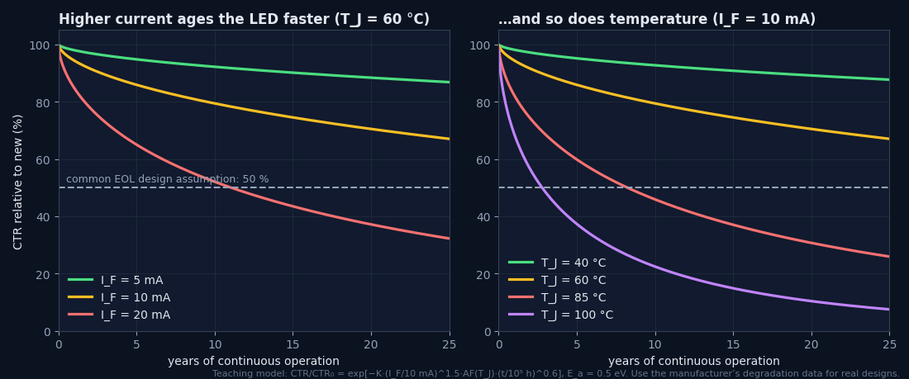
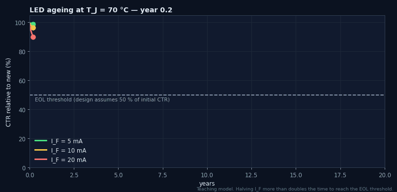
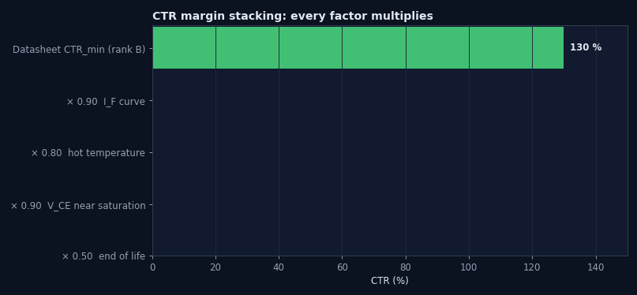
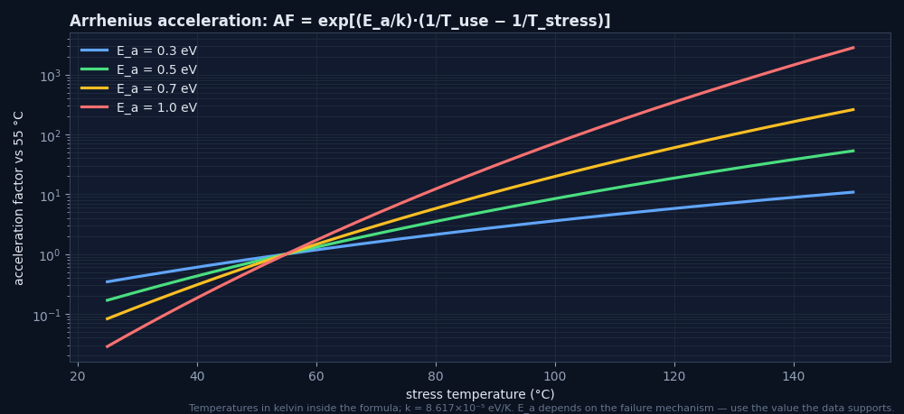
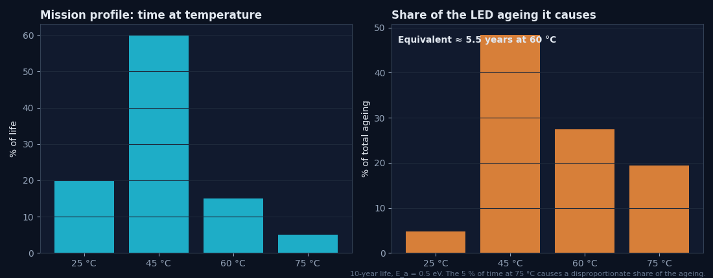

Optocoupler Derating
Designing for the part it will become, not the part you bought: LED current derating against aging curves, CTR margin stacking, temperature derating of every limit, and reliability math connecting operating conditions to expected lifetime.
Illustrations and animations are original teaching drawings, not to scale. Values marked representative are typical of common parts; always confirm against the current datasheet or standard you design to.
A new optocoupler and the same part after ten years in a warm cabinet are, electrically, different components. The LED emits less light, the encapsulant may have darkened slightly, and the leakage at the output is higher when hot. Derating means choosing today’s operating point so that tomorrow’s part still meets the specification, with margin.
Derate for survival
Keep stresses (IF, VCEO, IC, P, TJ) well below absolute ratings, so random failure rates stay low.
Derate for function
Keep enough CTR (or LED current above the threshold) at end of life, over temperature, for the circuit to work.
Derate for ageing itself
Lower IF and TJ slow LED degradation, so derating is partly self-rewarding.
LED light output decreases over time as defects grow in and around the active region, increasing non-radiative recombination (Module 12 covers the mechanisms). Manufacturers publish the result as CTR degradation curves: relative CTR vs time for several IF and temperatures. Three rules emerge from every such dataset:
Current density drives it
Degradation rises faster than linearly with IF. Doubling IF can cut time-to-threshold several-fold.
Temperature accelerates it
Higher junction temperature speeds defect growth (Arrhenius behaviour).
It slows with time
Most loss happens early; the curve flattens on a log time axis.


- This is a representative model for learning the trends, not vendor data.
- For real designs, read the vendor’s degradation curves (or request reliability data) and interpolate to your IF and TJ.
Worst-case CTR is a product of independent factors. Each looks modest alone, but together they routinely remove two-thirds of the headline figure:

Why “50 % at end of life”?
Many companies adopt kage = 0.5 as a default when vendor data for the exact conditions is missing. It is conservative for gently driven parts (5–10 mA, moderate temperature), and roughly what the harsher corners of published degradation curves show over 10+ years. The rule is valuable because it is simple and auditable. Replace it with data-backed factors when you have them, and never use a less conservative factor without data.
Every rating in the absolute-maximum table falls with temperature, but not always along the same line. Read each derating graph separately:
| Rating | Typical derating (representative) | Watch for |
|---|---|---|
| IF | Flat to 25–55 °C, linear to zero at Tmax | The LED limit often binds first in hot enclosures |
| PD (LED), PC (output), Ptot | Linear from 25 °C to zero at Tmax | Linear-mode outputs dissipate much more than saturated ones |
| IC | Limited indirectly via PC and TJ | IC·VCE in feedback loops |
| Isolation | Safety-limiting values (IS, PS, TS) | Barrier guarantees only apply within them |
Worked example — which limit binds first?
Fictional part: IF 50 mA flat to 25 °C, zero at 110 °C; Ptot 200 mW, same shape. Design: IF = 15 mA (18 mW LED), output saturated at 5 mA and 0.2 V (1 mW). Enclosure 90 °C.- IF limit at 90 °C = 50 × (110 − 90)/85 ≈ 11.8 mA → 15 mA exceeds it.
- Ptot limit = 200 × 20/85 ≈ 47 mW → 19 mW is fine.
- So the LED current rating binds first. Reduce IF to ≤ ≈ 6 mA (a 50 % derating of 11.8 mA) and compensate with a higher CTR rank.
Two different kinds of “reliability” apply to optocouplers, and mixing them up leads to bad decisions:
Random failures (constant rate)
Counted in FIT: failures per 109 device-hours. MTBF = 109/FIT hours. Handbook models such as SN 29500 (Siemens) and IEC 61709 give reference failure rates and stress factors for temperature and load. Optocouplers typically sit in the tens-of-FIT range at moderate stress (representative).
Wear-out (drift)
CTR degradation is gradual and predictable, not random. A FIT number does not capture it. Handle it with end-of-life margin (Section 3), not with MTBF.
- Ea — activation energy of the failure mechanism (e.g. 0.3–0.7 eV for many; use what the data supports)
- FITuse ≈ FITref / AF when converting between temperatures (handbook models add further stress factors)

Worked example — what does a 1000 h test at 100 °C prove?
Ea = 0.5 eV, field use at 55 °C.- AF = exp[5802 × (1/328.15 − 1/373.15)] ≈ 8.4.
- 1000 h at 100 °C ≈ 8400 h ≈ 1 year at 55 °C, not ten.
- Longer claims need longer tests, more parts, or the vendor’s cumulative reliability data.
SN 29500 and IEC 61709 are cited here by name only; their tables are not reproduced. Consult the current editions for reference failure rates and stress models.
Products do not live at one temperature. A mission profile lists how many hours are spent at each condition. Converting each slice to an equivalent time at a reference temperature (with AF) gives a realistic ageing budget:

Worked example — equivalent life
10 years: 20 % at 25 °C, 60 % at 45 °C, 15 % at 60 °C, 5 % at 75 °C; Ea 0.5 eV; reference 60 °C.- AF(25→60) ≈ 0.13, AF(45→60) ≈ 0.44, AF(60→60) = 1, AF(75→60) ≈ 2.1.
- teq ≈ 10 × (0.2·0.13 + 0.6·0.44 + 0.15·1 + 0.05·2.1) ≈ 5.5 years at 60 °C.
- Read the CTR loss for 5.5 years at your IF and 60 °C, rather than assuming 10 years at the maximum temperature (overly pessimistic) or at room temperature (optimistic).
A derating policy turns engineering judgement into a checkable rule. Typical company policies for optocouplers (examples, not a standard):
| Stress | Typical policy limit | Rationale |
|---|---|---|
| IF | ≤ 50 % of IF,max derated to TA,max | LED life; thermal margin |
| VCEO | ≤ 80 % of rating (including transients) | Avalanche and leakage margin |
| IC, PC, Ptot | ≤ 50 % of derated rating | Junction temperature and random failure rate |
| TJ | ≤ TJ,max − 20…25 °C | Encapsulant ageing, dark current |
| CTR | CTREOL ≥ 2 × needed (switching) | Function over life |
| Isolation | Peak working ≤ VIORM (no derating credit for VISO) | Partial-discharge-free life |
Design for year ten
Worst-case rank, hottest enclosure, end-of-life CTR.
Current ages the LED
Degradation grows faster than linearly with IF; gentle drive pays twice.
Temperature accelerates
Arrhenius: AF = exp[(Ea/k)(1/Tuse − 1/Tstress)].
Margins multiply
CTRmin × kIF × kT × kVCE × kage ≈ one-third of the headline.
50 % EOL default
Conservative, auditable; replace only with data.
Every limit derates
Check IF, P and IC separately at TA,max; the LED limit often binds first.
FIT is not drift
Random failure rate and CTR wear-out are different problems.
Document it
Policy, factors and sources in a reviewable table.
Design checklist
Tick items as you review a design. Your ticks are saved in this browser only; use your browser’s print function for a sign-off copy.
Four parts: multiple choice, true/false, a matching exercise and engineering scenarios. Score 80 % on the multiple choice to pass the module.